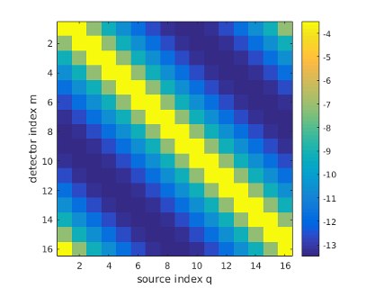
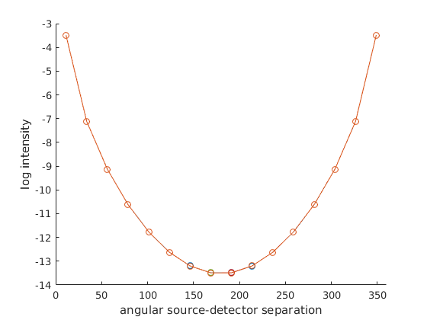

| Image Reconstruction in Diffuse Optical Tomography |
Toast toolbox tutorial: Building a DOT forward solverThis example shows how to write a simple DOT steady-state forward solver in Matlab using the Toast toolbox. To run this code yourself, you need Matlab, and you have to install the Toast toolbox on your computer. To save you typing, the full Matlab script for this example can be downloaded here. Step 1: Create a meshThe forward solver uses the finite element method to solve the diffusion equation in a domain. An unstructured mesh is required to define the domain and distribution of parameters. The Toast toolbox contains a few helper functions to create simple meshes. More complex meshes can be generated with external mesh generators and loaded into Toast. For this example, we create a simple two-dimensional circular mesh of radius 25 mm, using the following commands:
rad = 25; % mesh radius [mm]
nsect = 6; % number of sectors nring = 32; % number of rings nbnd = 2; % number of boundary rings [vtx,idx,eltp] = mkcircle(rad,nsect,nring,nbnd); % create the mesh geometry mesh = toastMesh (vtx,idx,eltp); % create the mesh object where nsect, nring, and nbnd define the element structure of the mesh. You can retrieve the geometry parameters from an existing mesh:
[vtx,idx,eltp] = mesh.Data;
nnode = mesh.NodeCount; nel = mesh.ElementCount; where 'vtx' is the list of node coordinates, 'idx' is the list of node indices for each element, 'eltp' is the list of element type identifiers for each element, 'nnode' is the number of nodes, and 'nel' is the number of elements in the mesh. To visualise the new mesh, use the 'Display' method of the toastMesh class:
mesh.Display
which will open the following figure: 
You can change the mesh resolution by varying the parameters used for mkcircle. Here is a mesh created with nsect=8, nring=16 and nbnd=4: 
Step 2: The optical coefficientsThe forward solver requires the distribution of absorption and scattering coefficient, as well as the refractive index. The mesh defines a basis u(r) with which functions f(r) defined in the domain can be approximated with a finite dimensional array of coefficients: 
In this example, we assume a piecewise linear basis, where coefficients fi are defined on the vertices of each mesh element. (Toast also allows to define a piecewise constant basis, as well has higher-order polynomial bases. We'll come to those later.) Toast constructs the basis ui(r) automatically. All we have to provide are the index arrays for absorption μa, scattering μs and refractive index n:
mua_bkg = 0.01;
mus_bkg = 1.0; ref_bkg = 1.4; nnd = mesh.NodeCount; mua = ones(nnd,1) * mua_bkg; mus = ones(nnd,1) * mus_bkg; ref = ones(nnd,1) * ref_bkg; mua, mus and ref now homogeneous parameter distributions. We will look at creating inhomogeneous distributions later. Source and detector locationsWe need to define at least one source distribution and one detector profile for the forward solver. For practical applications, multiple source and detector locations are usually employed. For this example, we assumed that sources and detectors are arranged with equidistant spacing around the circumference of the mesh:
nq = 16;
for i=1:nq phi_q = 2*pi*(i-1)/nq; Q(i,:) = rad * [cos(phi_q) sin(phi_q)]; phi_m = 2*pi*(i-0.5)/nq; M(i,:) = rad * [cos(phi_m) sin(phi_m)]; end mesh.SetQM(Q,M); The SetQM method attaches the source and detector locations to the mesh. You can display the source and detector location superimposed on the mesh display from step 1:
hold on
plot(Q(:,1),Q(:,2),'ro','MarkerFaceColor','r'); plot(M(:,1),M(:,2),'bx','MarkerFaceColor','b'); which will show the source locations as red circles, and the detector locations as blue squares: 
From the source and detector locations, you create the source and boundary projection vectors using the Qvec and Mvec functions:
qvec = mesh.Qvec('Neumann','Gaussian',2);
mvec = mesh.Mvec('Gaussian',2,ref); where Neumann defines the source as an incoming flux (you could instead using Isotropic for internal source distributions). Gaussian defines the boundary profiles for the source and detector response functions, and '2' is their width. The call to Mvec additionally requires the refractive index to construct the boundary operators. Running the forward solverWe now have everything in place to set up and run the forward solver to simulate the measuremenets for our problem. The FEM formulation leads to a linear system of the form 
where K is a system matrix depending on the parameters x (absorption, scattering, refractive index), Q is a matrix of column vectors, where each column consists of one source distribution, M is a matrix of column vectors for the detector response distributions, Φ is the matrix of photon density distributions for each source, and Y contains the measurements for each source and detector combination. With the Toast toolbox, this system is represented by the following code
K = dotSysmat(mesh,mua,mus,ref,0);
Phi = K\qvec; Y = mvec.' * Phi; where dotSysmat builds DOT system matrix K from the mesh geometry and parameter coefficients (the '0' at the end refers to the modulation frequency, which is zero for a steady-state problem). The linear system is solved for Φ with the backslash operator. For larger problems, you may have to switch to an iterative scheme such as bicgstab or gmres. The measurements are obtained from the photon density distributions by projecting onto the measurement profiles M. You can display the measurements as a sinogram:
figure

imagesc(log(Y)); xlabel('source index q'); ylabel('detector index m'); axis equal tight; colorbar or as a boundary profile as a function of source detector separation:
figure

hold on angle = [360/32:360/16:360]; for i=1:size(Y,2) ywrap = [Y(i:end,i); Y(1:i-1,i)]; plot(angle,log(ywrap),'o-'); end axis([0 360 -14 -3]); xlabel('angular source-detector separation'); ylabel('log intensity'); Note that all 16 measurement profiles coincide, because of the symmetry of the problem. For inhomogeneous problems or more complex shapes, this will no longer be the case. We can now write out the generated data as a linear vector with source-major ordering for later re-use:
data = reshape(log(Y'),[],1);
toastWriteVector('demo_matlab_fwd1.dat',data); |